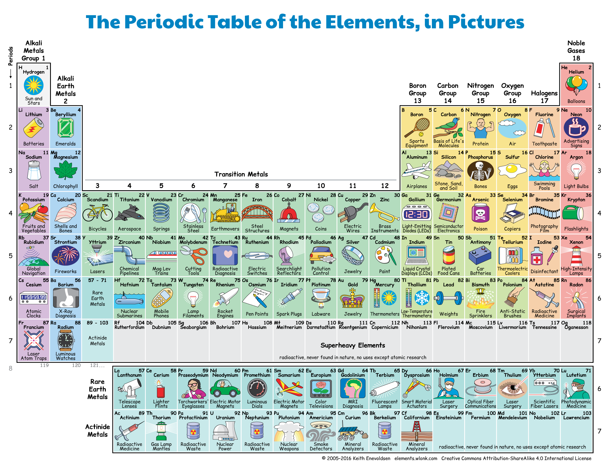

Lab5¶
Objetivos de aprendizagem¶
Com este guião exercitaremos:
a leitura da consola
escrita formatada
uso de dicionários
Elementos da tabela periódica¶
Em 2019 celebraram-se os 150 anos desde que Dmitry Mendeleev descobriu o sistema periódico. A Assembleia Geral das Nações Unidas e a UNESCO proclamaram 2019 como o ano internacional da tabela periódica dos elementos químicos.
Vamos pois juntar-nos à celebração e calcular o peso de algumas moléculas.
Tabela Periódica, em imagens. © 2005-2016 Keith Enevoldsen
Descrição do caso¶
O fluxo elementar dos programas é ler, processar, escrever. Ao começarmos por ler e escrever sabemos que estamos a tratar bem os dados e podemos depois concentrar a atenção no processamento.
A partir de List of chemical elements with properties foi criado um ficheiro com os elementos da tabela periódica, um elemento por linha.
Cada linha contém, para um elemento, número, período, grupo, símbolo, nome e massa atómica. O número corresponde à quantidade de protões do núcleo do átomo; o período e grupo indicam, respetivamente, a linha e coluna do elemento na tabela perídica; a massa atómica está expressa em \(u\) ou \(g/mol\), que corresponde por definição a \(1/12\) da massa de \(C_{12}\).
A tabela abaixo apresenta alguns elementos. Temos pois seis campos de dados em cada linha. Comece por identificar o tipo (em Python) de cada campo.
número |
período |
grupo |
símbolo |
nome |
massa atómica |
|---|---|---|---|---|---|
1 |
1 |
1 |
H |
Hydrogen |
1.008 |
2 |
1 |
18 |
He |
Helium |
4.003 |
3 |
2 |
1 |
Li |
Lithium |
6.941 |
4 |
2 |
2 |
Be |
Beryllium |
9.012 |
5 |
2 |
13 |
B |
Boron |
10.81 |
6 |
2 |
14 |
C |
Carbon |
12.011 |
7 |
2 |
15 |
N |
Nitrogen |
14.007 |
8 |
2 |
16 |
O |
Oxygen |
15.999 |
9 |
2 |
17 |
F |
Fluorine |
18.998 |
Deverá ter concluído que número, período e grupo são inteiros positivos, que o símbolo e o nome do elemento são strings e que a massa atómica é um float.
Tarefa A: ler e escrever¶
A primeira tarefa é preparar um script em python que leia da consola linhas com as propriedades de elementos e, para cada linha, apresente a informação com o formato desejado.
Pretende-se ler obter uma listagem com o nome do elemento justificado à direita, o símbolo entre parênteses e finalmente a massa atómica em notação científica com três casas decimais. Para efeito de formatação, considere que a dimensão de 15 e dois carateres para os campos nome e símbolo, respetivamente.
O ficheiro não terá mais de 150 linhas e cada linha não terá mais de oitenta caracteres.
Caso de teste¶
Input
1 1 1 H Hydrogen 1.008
2 1 18 He Helium 4.003
3 2 1 Li Lithium 6.941
4 2 2 Be Beryllium 9.012
5 2 13 B Boron 10.81
6 2 14 C Carbon 12.011
7 2 15 N Nitrogen 14.007
8 2 16 O Oxygen 15.999
9 2 17 F Fluorine 18.998
Output
Hydrogen (H ) 1.008e+00
Helium (He) 4.003e+00
Lithium (Li) 6.941e+00
Beryllium (Be) 9.012e+00
Boron (B ) 1.081e+01
Carbon (C ) 1.201e+01
Nitrogen (N ) 1.401e+01
Oxygen (O ) 1.600e+01
Fluorine (F ) 1.900e+01
Submeta no problema A do concurso IPC_2021_L5.
Tarefa B: organizar por símbolo químico¶
Agora que já conseguimos ler e escrever dados, podemos avançar para algo mais interessante. Vamos organizar os elementos por símbolo químico e usar um novo tipo de dados, dicionário, para apresentar a informação dos elementos que nos forem pedidos.
Neste caso, duas etapas: ler a informação dos elementos para um dicionário e depois, para cada símbolo, apresentamos a informação do elemento correspondente.
Prepare o seu programa para ler o número de elementos a considerar para o dicionário, as linhas com esses elementos e os símbolos pretendidos e apresentar, para cada símbolo pretendido e com a mesma formatação da tarefa anterior, o nome do elemento justificado à direita, o símbolo entre parênteses e finalmente a massa atómica em notação científica com três casas decimais. Se um símbolo pedido não existir, escreva “None” (sem as aspas).
É requerido que guarde a informação num dicionário considerando que a chave (key) é o símbolo químico.
Casos de teste¶
Input 1
9
1 1 1 H Hydrogen 1.008
2 1 18 He Helium 4.003
3 2 1 Li Lithium 6.941
4 2 2 Be Beryllium 9.012
5 2 13 B Boron 10.81
6 2 14 C Carbon 12.011
7 2 15 N Nitrogen 14.007
8 2 16 O Oxygen 15.999
9 2 17 F Fluorine 18.998
H
O
Output 1
Hydrogen (H ) 1.008e+00
Oxygen (O ) 1.600e+01
Input 2
9
1 1 1 H Hydrogen 1.008
2 1 18 He Helium 4.003
3 2 1 Li Lithium 6.941
4 2 2 Be Beryllium 9.012
5 2 13 B Boron 10.81
6 2 14 C Carbon 12.011
7 2 15 N Nitrogen 14.007
8 2 16 O Oxygen 15.999
9 2 17 F Fluorine 18.998
S
O
Output 2
None
Oxygen (O ) 1.600e+01
Submeta no problema B do concurso IPC_2021_L5.
Tarefa C: calcular peso de moléculas¶
Já estamos quase a concluir. Se se recorda da Química, ótimo. Senão, relembramos algumas fórmulas moleculares simples.
Molécula |
Fórmula molecular |
|---|---|
Água |
\(H_2 O\) |
Oxigénio |
\(O_2\) |
Cloreto de sódio |
\(Na Cl\) |
Dióxido de carbono |
\(C O_2\) |
A massa molecular de um elemento ou de um composto pode ser estimado pelo somatório, para cada elemento químico que surge na molécula, do produto do número de átomos desse elemento pela respetiva massa atómica.
Parece complicado? Não é! Consideremos a água, \(H_2 O\). OS elementos são \(H\) e \(O\). E se existir mais do que um átomo de um dado elemento, a seguir ao símbolo surge um inteiro. Assim, no caso da água, existem dois átomos de oxigénio e um de hidrogénio e teríamos 1.008e+00 * 2 + 1.600e+01.
Prepare o seu programa para ler o número de elementos a considerar, as linhas com esses elementos e as fórmulas moleculares pretendidas e apresentar, para cada molécula, a massa molecular em notação científica com três casas decimais.
Caso de teste¶
Input
9
1 1 1 H Hydrogen 1.008
2 1 18 He Helium 4.003
3 2 1 Li Lithium 6.941
4 2 2 Be Beryllium 9.012
5 2 13 B Boron 10.81
6 2 14 C Carbon 12.011
7 2 15 N Nitrogen 14.007
8 2 16 O Oxygen 15.999
9 2 17 F Fluorine 18.998
H2O
CO2
Output
1.802e+01
4.401e+01
Submeta no problema C do concurso IPC_2021_L5.